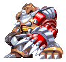
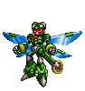

SNES · 16 upgrades
Mega Man X
Start with the dash. Follow the weakness chain, complete three return stops, then unlock Hadouken.
Boss routes, every permanent pickup, and the decisions that matter before you pass them. Choose your game.
Start with the dash. Follow the weakness chain, complete three return stops, then unlock Hadouken.

Choose the standard route or restore Zero. The red checkpoint catches the parts detour before it is too late.
All four Ride Armors, the Gold Armor decision, and the Vile detour required for Zero’s saber.
Separate orders and pickup instructions for X and Zero. Includes Ultimate Armor and Black Zero starts.

Complete Falcon and Gaea, plan the eight DNA choices, and protect your Zero route before the colony mission.

Restore Zero before the Nightmare changes. Complete Blade and Shadow Armor, and protect the Reploids carrying your parts.
Unlock X through rescues, complete Glide Armor, and decide who receives each permanent health upgrade.
Both armor sets, every Rare Metal, and the right hunter pair for each return. Includes R&D and special-form requirements.